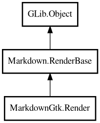

Render
Object Hierarchy:

Description:
public class Render :
RenderBase
Renders markdown content to a Gtk.TextBuffer using a state-based renderer.
Processes markdown blocks and spans, converting them to Pango markup and inserting them into the specified TextBuffer range.
## Entry Points
The Render class provides three public methods for processing content:
- add: Adds text to be parsed and rendered incrementally. Use this for
streaming content where you receive chunks over time.
- add_start: Starts a new chunk of content. This resets the parser's internal state and should be called when beginning a
new content block. You should call flush before calling this if you've been adding content with
add.
- flush: Finalizes the current chunk. Call this before starting a new chunk with add_start to ensure all
pending content is processed.
HTML tags embedded in the markdown content are automatically parsed and handled. The parser recognizes HTML tags and creates states for
them. You only need to provide opening HTML tags in your content. The renderer automatically handles closing tags when the corresponding
state is closed or when flush is called.
Content:
Properties:
Creation methods:
Methods:
- public override void add (string text)
Override add() to check that TextView is created (programming error if
not).
- public void clear ()
Clears all state, including sourceviews.
- public void end_block ()
Ends the current block.
- public override void on_a (bool is_start, string href, string title, bool is_autolink)
Callback for link spans.
- public override void on_br ()
Callback for line breaks (hard breaks).
- public override void on_code (bool is_start, string? lang, char fence_char)
Callback for code blocks.
- public override void on_code_block (bool is_start, string lang)
- public override void on_code_span (bool is_start)
Callback for inline code spans.
- public override void on_code_text (string text)
- public override void on_del (bool is_start)
Callback for strikethrough spans.
- public override void on_em (bool is_start)
Callback for emphasis/italic spans.
- public override void on_entity (string text)
Callback for HTML entities. The entity is already decoded, so just add
as text.
- public override void on_h (bool is_start, uint level)
Callback for header blocks.
- public override void on_hr ()
Callback for horizontal rule blocks.
- public override void on_html (bool is_start, string tag, string attributes)
Callback for HTML tags. Parser sends the tag name and attributes, we
create a new state, and parser will call on_html(false, ...) for the close tag.
- public override void on_img (string src, string? title)
Callback for image spans.
- public override void on_li (bool is_start, bool is_task, char task_mark, uint task_mark_offset)
Callback for list item blocks.
- public override void on_ol (bool is_start, uint indentation)
Callback for ordered list blocks.
- public override void on_other (bool is_start, string tag_name)
Generic callback for unmapped block/span types.
- public override void on_p (bool is_start)
Callback for paragraph blocks.
- public override void on_quote (bool is_start)
Callback for blockquote blocks.
- public override void on_softbr ()
Callback for soft line breaks. Inserts a space (or newline in code
blocks).
- public override void on_strong (bool is_start)
Callback for strong/bold spans.
- public override void on_text (string text)
Callback for normal text content.
- public override void on_u (bool is_start)
Callback for underline spans.
- public override void on_ul (bool is_start, uint indentation)
Callback for unordered list blocks.
- public void start ()
Starts/initializes the renderer for a new block.
Signals:
Inherited Members:
All known members inherited from class Markdown.RenderBase
All known members inherited from class GLib.Object
- @get
- @new
- @ref
- @set
- add_toggle_ref
- add_weak_pointer
- bind_property
- connect
- constructed
- disconnect
- dispose
- dup_data
- dup_qdata
- force_floating
- freeze_notify
- get_class
- get_data
- get_property
- get_qdata
- get_type
- getv
- interface_find_property
- interface_install_property
- interface_list_properties
- is_floating
- new_valist
- new_with_properties
- newv
- notify
- notify_property
- ref_count
- ref_sink
- remove_toggle_ref
- remove_weak_pointer
- replace_data
- replace_qdata
- set_data
- set_data_full
- set_property
- set_qdata
- set_qdata_full
- set_valist
- setv
- steal_data
- steal_qdata
- thaw_notify
- unref
- watch_closure
- weak_ref
- weak_unref